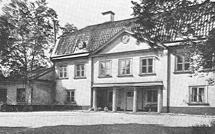

Södermalm i tid och rum
Ur Västra Södermalm intill mitten av 1800-talet, Arne Munthe, 1950»Räkningeholmen, även Räkneholmen kallad, som gränsar till Långholmen och är därifrån skild genom Långholmsviken, hör väl icke egentligen till denna beskrivning, efter holmen icke tillhör Stockholms stad men kan dock i anseende till dess nära belägenhet och några andra omständigheter här få intaga ett litet rum.» Elers urskuldande motivering skulle väl kunnat åberopas även i föreliggande skildring, om den icke nyligen blivit överflödig. I samband med delningen av Brännkyrka och Enskede församlingar beslöt Kungl. Maj:t, att Reimersholme, det namn Räkningeholmen fick i slutet av 1700-talet, vid årsskiftet 1956-1957 skulle överflyttas från förstnämnda församling till Högalids församling. Den ingår alltså numera i västra Södermalms ecklesiastika sammanhang.
Sitt nya namn fick holmen av hattstofferaren, rådmannen och slutligen tituläre kommerserådet Anders Reimers, född 1727 och död 1816, alltså nära nittio år gammal. Hans framgångsrika levnad illustreras redan av de anförda titlarna. Från hattmakareyrket, som visserligen också omfattade försäljning av klädespersedlar och modevaror, vidgade sig hans rörelse till en mera allmän affärsverksamhet, som tydligen blev i hög grad lönande. Reimers blev ägare till flera fastigheter i Gamla staden, av vilka han från 1770-talet till sin död bebodde den mellan Storkyrkobrinken (numera nr 9) och Stora Gråmunkegränd. Inom kommunalpolitiken spelade han en ledande roll och framträdde ofta som en stridbar företrädare för småborgarnas intressen. Ehuru ivrig mössa vanns han av Gustaf III före statsvälvningen 1772.
Räkningeholmen (Räkneholmen), ursprungligen ett kargt och bergigt område, hörde under Hägerstens gård. Efter spinnhusets tillkomst inlöstes den av kronan för att bereda en bostad för spinnhuspredikanten. Spinnhuset betalade från den tiden 45 d.k.m. i årlig ränta till frälseägaren, och predikanten fick sitt logi i ett litet hus med två små flyglar mitt emot spinnhusbron. Sedan hans bostadsfråga efter en tillbyggnad till spinnhuset i stället kunnat ordnas där, blev holmen överflödig för detta ändamål. Med Kungl. Maj:ts tillstånd överläts 1774 den sydöstra delen på perpetuellt arrende till bergsrådet Gustaf von Engeström, som sedan transporterade sin rätt på bergsfiskalen Daniel Lithander. Området som fick karaktären av ett trivsamt litet sommarnöje, kombinerat med en skedvattensfabrik, innehades i början av 1800-talet av apotekaren på Svanen Fredrick David Görges. Efter hans maka Charlotta Gertrud Wilcke fick anläggningen namnet Charlottenburg. Den övriga och större delen av holmen med en förfallen åbyggnad bortarrenderades på 50 år till Anders Reimers. Från 1784 har området börjat kultiveras av Reimers. Två år senare anhöllo han och Lithander att få skatteköpa sina delar av holmen. Kommerskollegiet tillstyrkte med hänsyn till att den Reimerska delen mest bestod av berg och klippor, som icke kunde »utan snart oräkneligt arbete och kostnad genom bergssprängning och jordläggning bringas till någon fruktbarhet». Ansökan beviljades av Kungl. Majt den 5 oktober 1786.
|
 |
Om Reimers har det vackert sagts, att han på sitt område »inkräktat av sjön ett större utrymme och genom ditförd jord trugat bergen att bliva fruktbärande». Malmgården, som han lät uppföra, ett tvåvånings trähus med brutet tak, flyglar, sammanbyggda med huset, och en kolonnburen portik mot gårdsplanen inplacerades på ett utsökt sätt, så att fri utsikt öppnade sig mot Riddarholmskyrkan. |